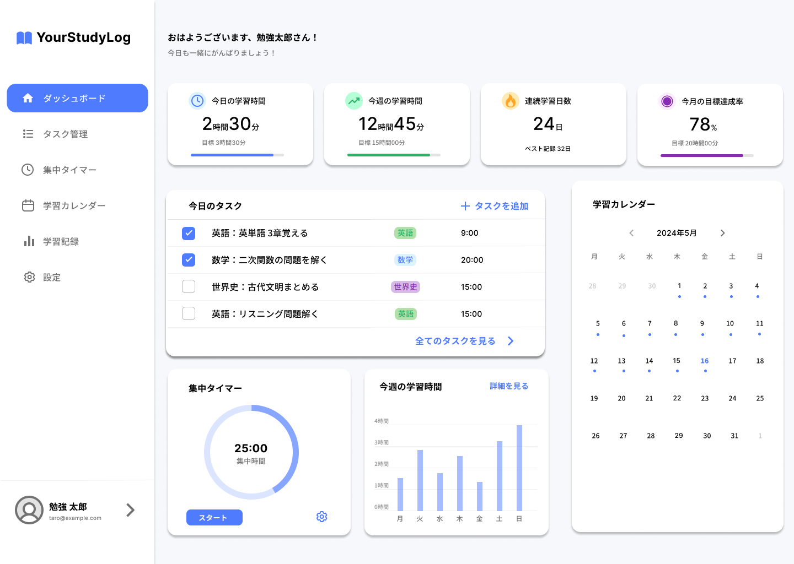

英語
FEATURE
特徴
📝 タスク管理
学習タスクを登録し、進捗状況をひと目で確認できます。 やるべきことを整理することで、学習の抜け漏れを防ぎます。
- ✓ タスクの追加・編集
- ✓ 優先度の設定
- ✓ 完了状況の管理
⏰ 集中タイマー
集中時間と休憩時間を管理しながら、 効率よく学習を進めることができます。 学習時間は自動で記録され、振り返りにも活用できます。
- ✓ ポモドーロタイマー対応
- ✓ 学習時間の自動記録
- ✓ 集中履歴の確認
📅 学習カレンダー
毎日の学習記録をカレンダー形式で確認できます。 継続状況が可視化されるため、学習習慣の定着をサポートします。
- ✓ 学習履歴の確認
- ✓ 継続日数の可視化
- ✓ 月ごとの振り返り
DASHBOARD
学習を可視化するダッシュボード
学習時間・タスク・カレンダーをまとめて管理。 勉強の継続をサポートします。

STUDY LOG
最近の学習記録
英単語帳
数学
数ⅠA 二次関数の
問題演習
世界史
共通テスト対策
古代文明まとめ
SUCCESS STORY
利用者の学習事例

FAQ
よくある質問
基本機能は無料で利用できます。
PC・タブレット・スマホに対応しています。